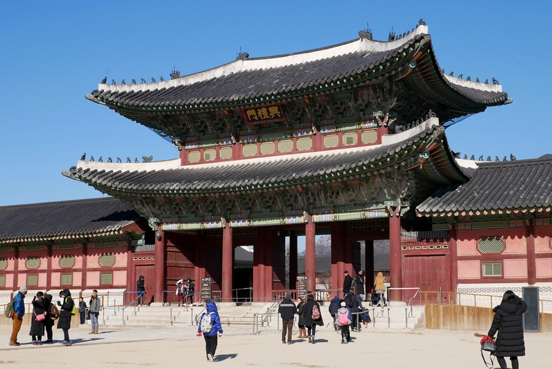
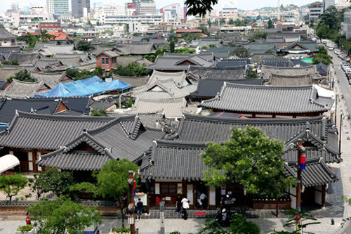

韓國
韓國是一個充滿活力的國家，擁有悠久的歷史和多元的文化，融合了傳統與現代。從古老的宮殿到現代的都市景觀，這裡展現出獨特的魅力，吸引著來自世界各地的遊客。
以下是一些主要的旅遊景點以及它們的歷史和文化詳細介紹：
旅遊景點

景福宮
歷史:
景福宮是韓國最大的宮殿之一，建於1395年，是李氏朝鮮王朝的主要宮殿。它見證了朝鮮王朝的興衰和歷史變遷，曾經是國王的居住地和政務中心。宮殿在日治時期遭受破壞，經過多次修復，現在成為重要的歷史與文化象徵。
文化：
景福宮不僅是韓國古代宮殿建築的典範，還是韓國文化遺產的代表。其建築風格融合了五千年來的文化傳承，展示了韓國確立的傳統美學。這裡舉辦的傳統音樂和舞蹈表演吸引了大量遊客。
景點：
1. 經典的守門儀式 ：
每天在宮殿的正門舉行的守衛換班儀式，吸引了眾多遊客前來觀賞。
2. 國立民俗博物館 ：
位於宮殿內，介紹韓國的民俗和文化，展示傳統生活和風俗。
3. 青瓦台 ：
韓國總統府位於景福宮後面，是一個具有象徵意義的地點。

釜山海雲台
歷史:
海雲台是釜山最著名的海灘之一，隨著韓國經濟的發展，海雲台的旅遊業在20世紀90年代迅速崛起，成為家庭和遊客的熱門去處。這裡的美景吸引了無數人前來度假，也舉辦了多項國際活動。
文化：
海雲台不僅是一個度假勝地，還是多元文化的體現。從夏季的海灘派對到冬季的燈光節，這裡的活動豐富多彩，展現了釜山的活力。此外，周圍的餐廳和咖啡廳提供新鮮的海鮮和地道美食。
景點：
1. 海雲台市場 ：
當地著名的食品市場，遊客可以在這裡品嘗新鮮的生猛海鮮和韓國傳統小吃。
2. 釜山電影節 ：
每年10月舉行的國際電影節，吸引世界各地的影迷和電影工作者。
3. 海雲台文化村 ：
這裡有色彩繽紛的藝術壁畫和手工藝品，是拍照和購物的絕佳地點。

全州韓屋村
歷史:
全州韓屋村擁有200多年的歷史，是韓國傳統建築的縮影。這裡的韓屋（傳統韓國房屋）保存良好，展示了李氏朝鮮時代的生活方式。全州被稱為韓國的食都，以其豐富的傳統飲食文化著稱。
文化：
全州韓屋村是體驗韓國傳統文化的理想地點，遊客可以在這裡了解韓國的歷史、藝術和飲食文化。在這裡，參與者可以體驗韓式茶道、書法等傳統活動，感受日常生活中的韓國風情。
景點：
1. 韓屋 ：
村內的韓屋可供遊客參觀及住宿，體驗傳統的生活方式。
2. 全州百科全書館 ：
展示關於全州及韓國的歷史和文化，包括展覽和教育活動。
3. 全州拌飯 ：
當地著名的食品，遊客可以在村內的餐廳嘗試這道色香味俱全的傳統美食。